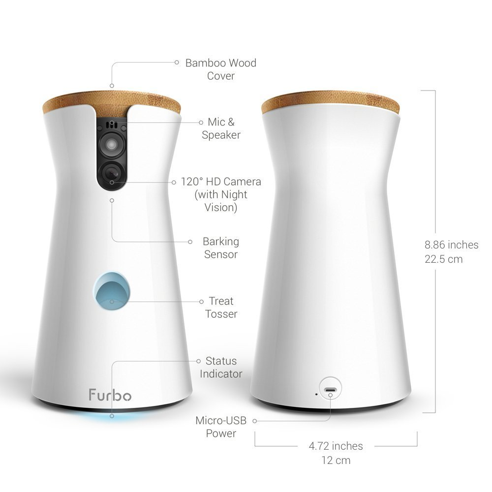
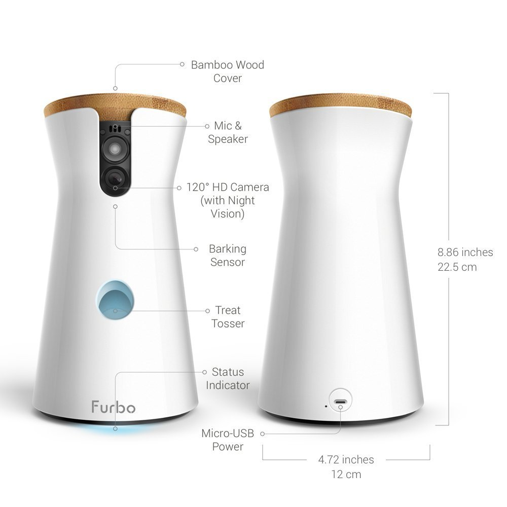

Furbo Dog Camera: Treat Tossing, HD Wifi Cam, and 2-Way Audio
 

Product Information
- Fun TREAT TOSSING: TOSS a treat to your dogs via the free Furbo iOS/Android app. Fill it with your dogs’ favorite treats & play a game of catch.
- Full HD Camera & Night Vision: livestream video to monitor your pet with a wide-angle view, day and night.
- 2-Way Chat & BARKING ALERT: Furbo’s BARKING SENSOR is MADE FOR DOGS. It sends push notifications to your smartphone when it detects barking. Know what’s going on at home and talk to calm them down via the app.
- Easy 3-Step Setup: 1) plug in to a power outlet using its USB cord 2) download the Furbo app 3) connect to your home wifi.
- Stable internet connection & Wifi signal are recommended for best performance.